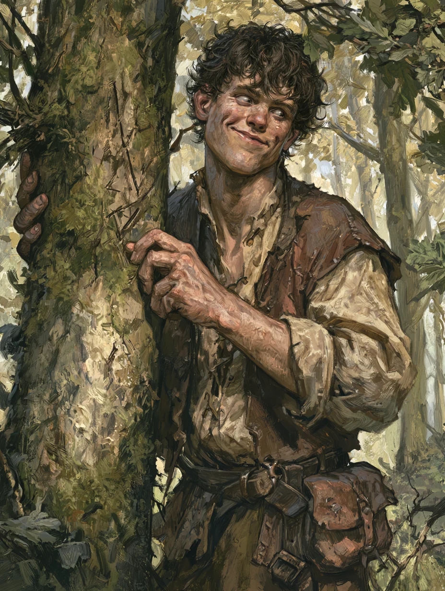

Fitchwick Peckhold is a human enchanter — one of the hedge-magicians who trade in runes and sigils, the old cold grammar of the Fair Folk. Where a friar carries scripture and a knight carries steel, Fitchwick carries a satchel of chalked signs and a grin that has talked him out of worse rooms than this one. Two-and-twenty years old, chaotic of temper, and drawn to Dolmenwood by the promise of relics older than the Duchy.
Ability Scores
Body & Bearing
Saving Throws
Skills & Senses
Rated as an X-in-6 chance:
Runes & Sigils
An enchanter works magic not by memorised spells but by inscribed runes — signs of the old Fair grammar, spent as they are used. Fitchwick keeps one at the ready.
Deathly Blossom
Duration: 1 Turn or until used
Range: Appears in caster’s hand
An exquisite white rose is conjured in the caster’s hand.
Proffering the rose: One who smells the rose must Save Versus Doom or fall into a deep faint—appearing dead—for 1d6 Turns.
Duration: The flower remains in existence until it is used or 1 Turn passes.
Restrictions: Only living creatures are affected.
Arms & Armour
Longsword
A straight blade of a yard and more, carried against the wood’s worse tenants.
Staff
A stout length of ashwood — a walking-stick, a probing-pole, and a cudgel at need.
Leather
A breastplate of hardened leather, with soft leather covering the rest of the body.
Gear & Baggage
- Tent
- Clothes, common
- Torches ×3
- Shovel
- Marbles